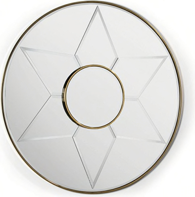

Couleur : or
Forme : rond
Style : ce miroir est composé d’une structure à double cercles en métal doré, d’un verre miroir à biseaux et comporte un dessin d’étoile.
Époque : contemporain
Cadre : le miroir est entouré d’un cadre doré très fin.
Hauteur : 120 cm
Largeur : 120 cm
Profondeur : 4 cm
Poids : 10 kg
Date d’acquisition : 2021-02-10
Moyen d’acquisition : achat
Prix d’achat : 1197 €
En mars 2020, le prix du miroir était à 1197 €.
Ce miroir à fixer peut trouver sa place dans toutes les pièces de la maison.